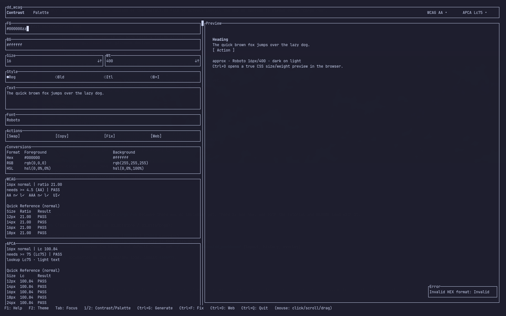
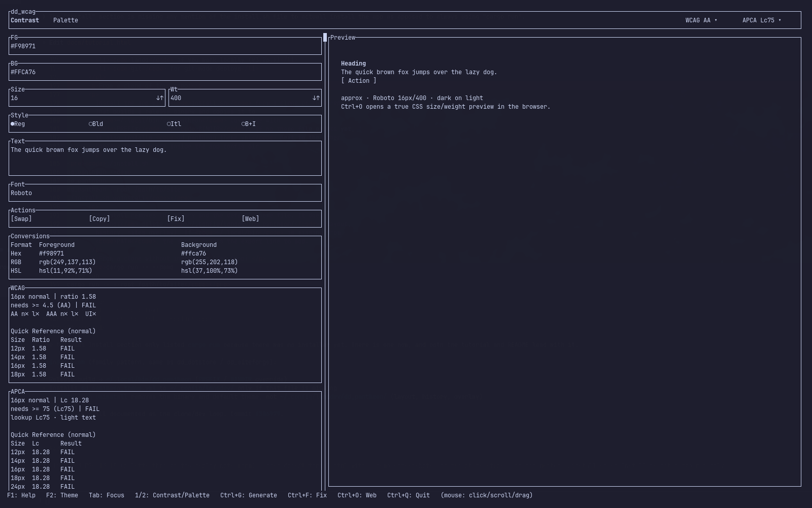
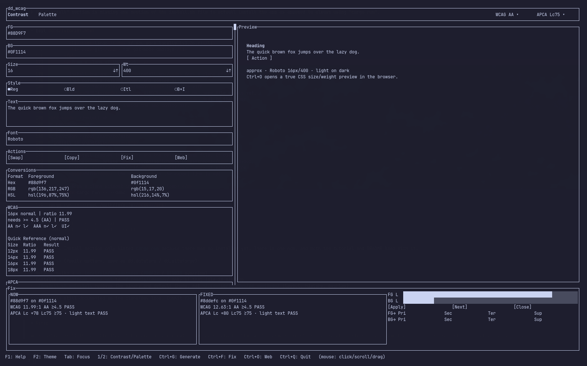
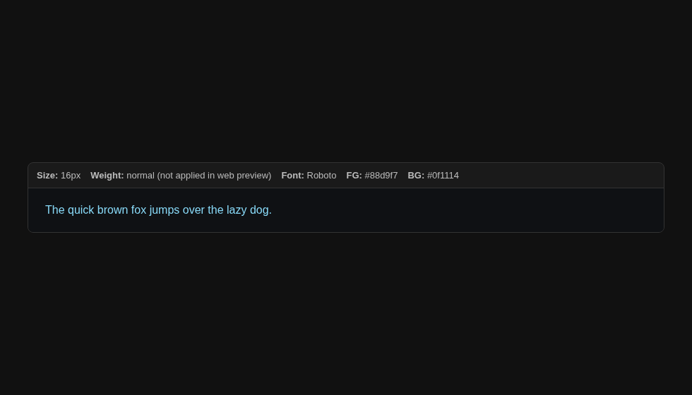
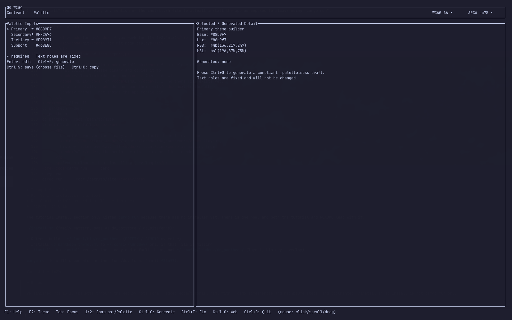
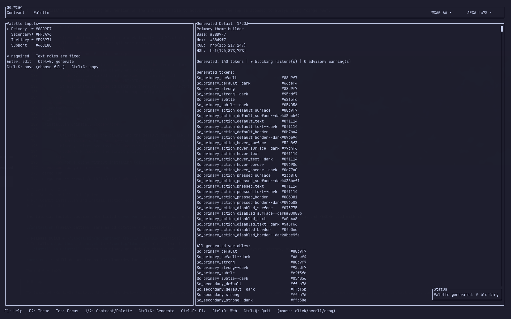
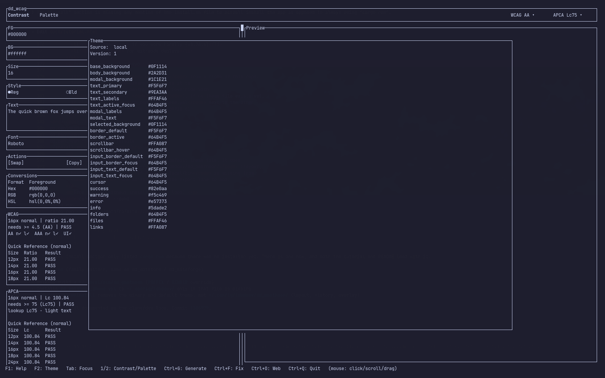
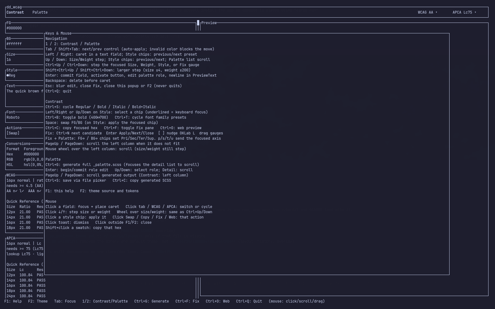

Requirements
- A truecolor terminal (foot, kitty, Alacritty, Ghostty, WezTerm, and similar).
- Rust / cargo to build from source.
- Optional: a clipboard helper (
wl-copy,xclip,xsel,pbcopy, orclip) so Ctrl+C can copy hex or SCSS. - Optional: a graphical session so Ctrl+O can open the CSS preview in a browser.
Put ~/.local/bin on PATH if you use the installer. That is the default install prefix.
Install
From this checkout
./install.shThe installer:
- Builds
dd_wcagin release mode. - Installs the binary to
~/.local/bin/dd_wcag. - Copies
dd_wcag_theme.ymlto~/.config/ldnddev/only if that file is missing (it will not overwrite your theme).
By cloning the repo
./install.sh --repo https://github.com/ldnddev/dd_wcag.git --branch master
Extra flags: --prefix DIR (binary destination) and --config-dir DIR (theme destination).
Run without installing
cargo run
# or
cargo build --release
./target/release/dd_wcagFirst run
Launch dd_wcag. A bottom-right toast reports which theme loaded (local, global, or built-in) and disappears after five seconds. The app opens on the Contrast tab with black text on white, 16px, weight 400.
Two tabs sit in the header: Contrast and Palette. Press 1 / 2, or click the labels. The header also holds the WCAG target (AA or AAA) and the APCA pass bar (Lc45, Lc60, Lc75, Lc90). Click either control to cycle it. Those targets change official pass/fail; they do not change the numbers themselves.
Quit with Ctrl+Q. Esc never quits — it blurs an editor, closes Fix, or closes help.
Contrast tab
This is the pair checker. Enter a foreground and a background, set size/weight/style, and read WCAG ratio plus APCA Lc for that pair.
Enter colors
Focus starts on FG in edit mode. Accepted formats:
- Hex:
#rgbor#rrggbb(the#is optional) - RGB / RGBA:
rgb(r, g, b),r, g, b, orrgba(r, g, b, a)(alpha is validated, RGB is used) - HSL:
hsl(h, s, l)(percent signs on s/l are allowed)
Tab applies the field and moves to the next control. Shift+Tab goes backward. Invalid color input blocks the move and raises a toast:

Size, weight, and style
- Size is CSS pixels, clamped 6–120. Default 16.
- Wt is 100–900 in steps of 100. Default 400.
- Style chips: Regular, Bold, Italic, Bold+Italic. Italic is visual only; it does not change the math.
Focus Size or Weight, then ↑ / ↓ or Ctrl+↑ / Ctrl+↓.
Shift+Ctrl+↑ / ↓ takes a larger step (size ±4, weight ±200).
Click the ↓ / ↑ glyphs, or use the mouse wheel over those fields.
Ctrl+B toggles bold (400 ↔ 700). Ctrl+S on Contrast cycles the style chips.
A realistic pair
Replace the defaults with a light brand color on a dark surface, then Tab out of each field. The preview polarity caption switches to “light on dark”, and both score tables update.
#88D9F7 on #0F1114. WCAG 11.99:1 passes AA at 16px. APCA Lc 77.85 passes the header bar (Lc75) at 16px, but the 12px lookup row still fails — size matters.
How to read the scores
- WCAG official pass/fail uses the header level (AA or AAA) plus large-text rules: 18px+, or 14px+ at weight ≥ 700. AA normal text needs 4.5:1; AA large text needs 3:1.
- APCA official pass/fail is
|Lc| ≥the header bar. The lookup line is advisory: recommended Lc for the current size/weight, not a second fail. - Quick-reference tables show 12 / 14 / 16 / 18px (APCA also 24px) at the current weight so you can see how the same pair behaves at nearby sizes.
- APCA is directional. “Text on Primary” is not the same pair as “Primary on Text”.
The TUI preview is labeled approx. Terminal widgets cannot honor a real CSS pixel size or font family. Use Ctrl+O for a true browser sample.
Other Contrast actions: Space swaps FG/BG (unless Style chips are focused), Ctrl+C copies the focused color’s hex, Shift-click a swatch does the same.
Fails and the Fix pane
Two light brand colors stacked together is a common miss. Coral on gold here is 1.58:1 — it fails WCAG and APCA at every listed size.

#F98971 on #FFCA76. Use this as a check that both engines agree the pair is unusable for body text.Press Ctrl+F or click Fix. A strip opens at the bottom (wide/medium terminals) or a centered overlay (narrow). It shows the current pair, a nearby candidate, OKLab lightness gauges, Apply / Next / Close, and chips to send the fixed color into a palette role.

From Fix you can push the focused axis into Primary / Secondary / Tertiary / Support with the FG→ / BG→ chips, or the keys p s t u. That is the handoff into the Palette tab — Contrast FG/BG are not overwritten by palette generation.
Browser preview
Ctrl+O (or the Web action) writes /tmp/dd_wcag_preview.html and opens it. That file is the only path that renders a real CSS font-size and loads the preview font from Google Fonts when the family name is a normal Latin identifier.

Weight in the web preview
The preview page currently labels weight and notes that it is not applied in the HTML sample. Contrast math in the TUI still uses the weight you set.
Palette builder
Press 2 or click Palette. Required bases are Primary, Secondary, and Tertiary. Support is optional (default #46BE8C). Text roles are fixed tokens and generation never edits them.

Ctrl+G derives light and dark surfaces, action states, semantics, neutrals, and support tokens, then runs WCAG compliance checks. The detail list is scrollable (↑ / ↓, PageUp / PageDown, mouse wheel). A scrollbar appears when the list overflows.

Export
Ctrl+S opens a file picker (default name _palette.scss).
Ctrl+C copies the same SCSS when a clipboard command exists.
Both are gated:
- You must generate first.
- Required bases must parse.
- Blocking WCAG failures (action text/surface, borders, focus) refuse export.
- Disabled-state failures are advisory and do not block.
Generated variables are opaque rgba(r, g, b, 1), grouped in a fixed order: Primary, Secondary, Tertiary, Primary Action, Secondary Action, Tertiary Action, Semantic, Text Roles, Neutrals, Support/Utility.
Theming
Chrome colors load from YAML, first hit wins:
./dd_wcag_theme.yml(project-local)~/.config/ldnddev/dd_wcag_theme.yml(global)- Built-in defaults
Files must declare version: 1. Unsupported or missing versions fall back to defaults and toast a warning. Press F2 to see the active source, version, and every token.

THEME_STRUCTURE_STANDARD.md — the shared ldnddev TUI schema.Keyboard and mouse
F1 opens the in-app list. Esc or a click outside closes it.

Everyday keys
| Key | Action |
|---|---|
| 1 / 2 | Contrast / Palette (when you are not typing in a field) |
| Tab / Shift+Tab | Next / previous control; invalid color blocks the move |
| Enter | Commit field, activate button, edit a palette role, or newline in preview text |
| Ctrl+↑ / ↓ | Step focused Size, Weight, Style, or Fix gauge |
| Ctrl+F | Toggle Fix |
| Ctrl+G | Generate palette (also switches to Palette) |
| Ctrl+O | Open browser preview |
| Ctrl+S | Contrast: cycle style chips. Palette: save SCSS |
| Ctrl+C | Contrast: copy focused hex. Palette: copy generated SCSS |
| Ctrl+Q | Quit |
| Esc | Blur / close Fix / close F1 or F2 — never quit |
Mouse
- Click a field to focus it and place the caret. There is no selection range.
- Click tabs, WCAG, or APCA to switch or cycle.
- Click style chips, Swap, Copy, Fix, or Web to fire that action.
- Wheel over Size/Weight steps the value; wheel over the left Contrast column or palette detail scrolls.
- Shift-click a color swatch to copy that hex.
- Click a toast to dismiss it.
Uninstall
./install.sh -uninstall
Removes ~/.local/bin/dd_wcag and ~/.config/ldnddev/dd_wcag_theme.yml, then removes ~/.config/ldnddev only if the directory is empty. Pass --prefix / --config-dir if you installed somewhere else.
Updating tutorial images
Screenshots live in docs/images/ and are referenced relatively from this page. The repo-root screenshot.png is a copy of contrast-pair.png for the README hero.
Regenerate everything
On a Wayland session with foot, tmux, grim, and hyprctl:
./docs/capture-screenshots.sh
Optional: SKIP_WEB=1 skips the Chromium web-preview shot. KEEP_WINDOW=1 leaves the last capture window open. The script builds the release binary if needed, floats a 1600×1000 foot window, drives the TUI through tmux, and writes the PNGs listed below.
After a recapture
Open this HTML file in a browser and look at every figure. Confirm the UI still matches the caption (colors, pass/fail, toasts, Fix strip, generated token count). If a shot is stale or blank, rerun the script rather than editing the PNG by hand.
What each file shows
| File | How it is captured | Replace when… |
|---|---|---|
contrast.png |
Default Contrast tab after the 5s startup toast expires | Layout, default colors, or score panels change |
help.png |
F1 | Keybindings copy in render_keybindings_popup changes |
theme.png |
F2 | Theme tokens or F2 layout change |
toast.png |
Type zz into FG, then Tab |
Toast placement or parse-error wording changes |
contrast-fail.png |
FG #F98971, BG #FFCA76 |
Fail styling or score tables change |
contrast-pair.png |
FG #88D9F7, BG #0F1114 |
Preview, conversions, or default size/weight change |
fix.png |
Brand pair, then Ctrl+F | Fix strip layout or gauges change |
web-preview.png |
Chromium headless shot of /tmp/dd_wcag_preview.html after the brand pair |
web_preview.rs markup or styles change |
palette.png |
2 on a fresh session | Palette input/detail chrome changes |
palette-generated.png |
Ctrl+G on the default bases | Token naming, generate summary, or scrollbar chrome changes |
Add a new screenshot
- Pick a kebab-case filename, for example
docs/images/matrix.png. - Add a
shot namestep (and anytmux send-keysneeded) to the matching phase indocs/capture-screenshots.sh. - Document the file in the script’s header catalog and in the table above.
- Insert a
<figure>in this page. Writealtthat describes the UI state, not “screenshot of…”. Keep the visible caption for the teaching point. - Run the capture script, then hard-refresh this page (Ctrl+Shift+R) so the browser does not keep an old PNG.
Capture the full 1600×1000 window. Do not crop in an editor unless you also change the width / height attributes and the script. Prefer rerunning the script over photoshopping chrome, because key labels drift.
The capture window uses your current foot theme and font. If screenshots look “off-brand” after a desktop theme switch, rerun the script so the tutorial matches what users of this machine actually see.